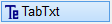
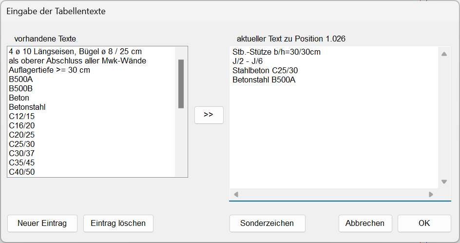

")
")
Tabellentexte für statische Positionen anlegen und zuweisen. Alle Positionierungen, für die es schon Tabellentexte gibt, werden in der Zeichnung markiert.
Tabellentexte bieten die Möglichkeit, einem statischen Positionskreis weitere Informationen zuzuordnen. Sie können als Legende für die statischen Positionen in Tabellenform zusammengefasst und in der Zeichnung abgelegt werden. Die Legende (Tabelle) kann für die Weiterverarbeitung in anderen Programmen in die Windows®-Zwischenablage kopiert werden.
Tabellentexte können individuell erfasst und/oder aus vorhandenen Textmodulen zusammengestellt werden. Oft benötigte Textmodule, z. B. für die Betongüte, Montageanweisungen etc., sind im ISBCAD Lieferumfang bereits enthalten. Die vorhandenen Textmodule können bearbeitet und von Ihnen durch beliebige weitere Module ergänzt werden. Sie werden in der Zeichnung gespeichert und lassen sich über die Profileinstellungen in andere Zeichnungen übertragen.
|

So wird's gemacht:
§Klicken Sie die Positionsnummer des Positionskreises an, zu dem Sie einen Tabellentext schreiben möchten.
Öffnet den Dialog Eingabe der Tabellentexte.
§Geben Sie unter aktueller Text zu Position... den gewünschten Text ein. Mit der Eingabetaste fügen Sie einen Zeilenumbruch ein.
Um einen als Textmodul vorhandenen Text hinzuzufügen, markieren Sie diesen in der Liste unter vorhandene Texte und klicken Sie auf  .
.
§Bestätigen Sie die Textangaben mit OK.
Die Textangaben werden als Tabellentext übernommen. Sie können sofort einen weiteren Positionskreis auswählen, um einen Tabellentext einzutragen oder mit TabAkt die Tabellentexte auf der Zeichenfläche platzieren.
Falls in der Zeichnung bereits eine Positionstabelle für die statischen Positionen vorhanden ist, müssen Sie diese explizit aktualisieren.
» Positionstabelle anlegen oder aktualisieren
Optionen im Dialog "Eingabe der Tabellentexte"
 |
vorhandene Texte
Liste der als Textmodul zur Verfügung stehenden Texte.
Übernahme der Einträge aus der Liste vorhandene Texte in die Liste aktueller Text zu Position. Sie können die Einträge aus der linken Tabelle auch durch Doppelklick mit der linken Maustaste in die rechte Tabelle übernehmen.
aktueller Text zu Position
Einträge der ausgewählten Position. Mit der Eingabetaste fügen Sie einen Zeilenumbruch ein. Die Einträge werden der Position erst nach der Bestätigung mit OK zugewiesen.
Neuer Eintrag
Erstellen eines neuen Eintrages. Wird der Liste vorhandene Texte hinzugefügt.
» Textmodule für statische Positionen verwalten
Eintrag löschen
Löschen des markierten Eintrages aus der Liste vorhandene Texte.
» Textmodule für statische Positionen verwalten
Sonderzeichen
Einfügen von Zeichen und Symbolen im Eintrag aktueller Text zu Position.
OK
Einträge werden in die Zwischenablage kopiert. Sie können eine weitere Positionierung anklicken oder mit TabAkt die Tabelle ausgeben.
Siehe auch:
·Positionstabelle anlegen oder aktualisieren
·Positionsübersicht anzeigen und ausgeben
·Tabellentexte ändern – [PosKre | ändern]
Zugehörige Referenzen: